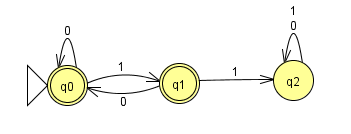
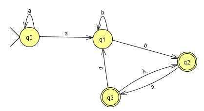
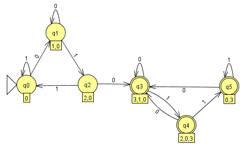
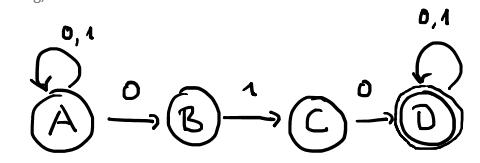
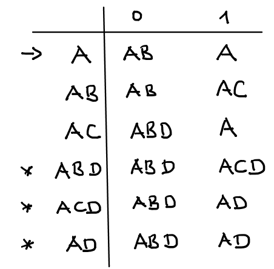
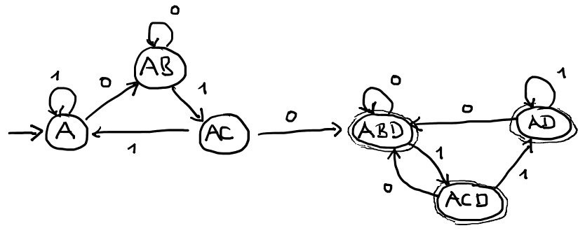
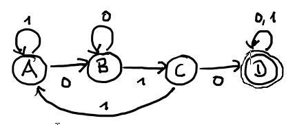
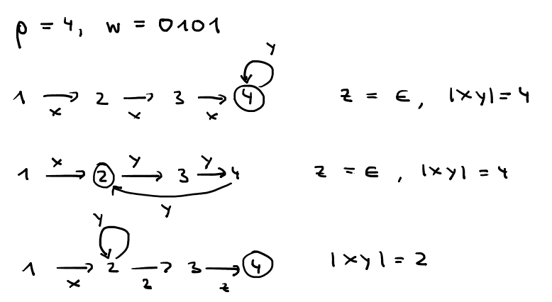
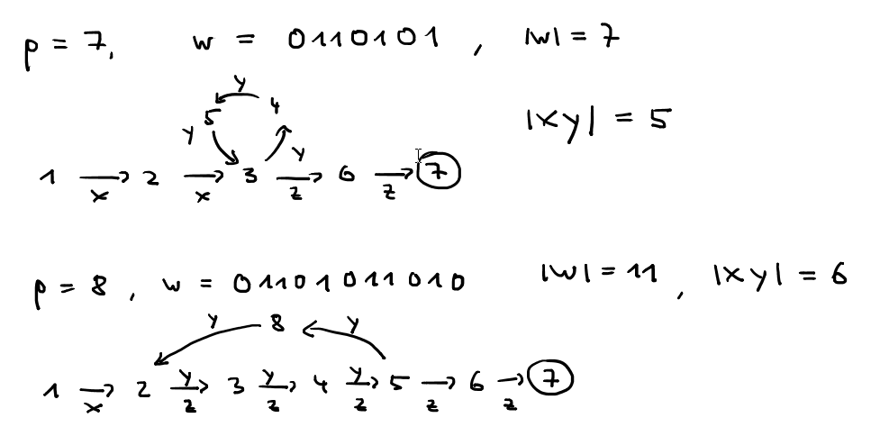

Ein endliches Alphabet \( \Sigma \) ist eine endliche Menge von Symbolen, z.B: \( \Sigma = \{0,1\}\).
Eine endliche Folge von Symbolen aus \( \Sigma \) heißt Wort, z.B: \(w = 010010 \).
Die Menge aller Wörter über \( \Sigma \) heißt \( \Sigma^*.\)
Die Anzahl der Symbole von w ist die Länge von w: \( \left|w\right|\)
Das leere Wort heißt \(\epsilon \). Es gilt \( \left|\epsilon\right| = 0\).
Eine (formale) Sprache \(L\) über \( \Sigma \) ist eine Teilmenge von \( \Sigma^*\), z.B. die Menge der Worte über \( \{0,1\} \), die keine zwei aufeinanderfolgenden Einsen haben. \(L = \{ \epsilon,0,1,00,01,10,001,010,100,101,... \}.\)
Ein deterministischer endlicher Automat (DEA) besteht aus :
Die Übergangsfunktion ermittelt aus einem Zustand und einem Eingabesymbol einen Folgezustand.
\( \delta(q,a) = \) der Zustand, in den der DEA geht, wenn er im Zustand \( q \) das Eingabesymbol \( a \) liest. Ein DEA erkennt oder akzeptiert ein Wort \( w, \) wenn er nach dem Abarbeiten der Symbole von \( w \) in einem Endzustand ist.

Die 5 Bestandteile des DEA:
Welche Wörter werden durch diesen Automaten akzeptiert?
1. Konstruiere einen DEA über \( \Sigma = \{a\} \), der die Sprache der Wörter mit einer ungeraden Anzahl von a's akzeptiert.
2. Konstruiere einen DEA über \( \Sigma = \{a,b\} \), der die Sprache der Wörter mit einer geraden Anzahl von a's und mindestens 3 b's akzeptiert.
Ein nichtdeterministischer endlicher Automat (NEA) unterscheidet sich von einem DEA in der Übergangsfunktion \( \delta. \)
\(\delta(q,a) \) ist eine Menge von Zuständen. Wenn der NEA im Zustand \(q\) das Eingabesymbol \(a\) liest, kann er in einen der Zustände aus dieser Menge wechseln. Außerdem kann ein NEA auch ohne Lesen einer Eingabe seinen Zuständ wechseln. Dies nennt man \( \epsilon \)-Übergang (manchmal wird dafür auch \( \lambda \) verwendet).
Ein NEA akzeptiert ein Wort \(w\), wenn es mindestens eine Möglichkeit für ihn gibt, nach der Abarbeitung in einem Endzustand zu sein.
Welche Sprache akzeptiert dieser NEA?

Konstruiere einen NEA über \( \Sigma = \{0,1\} \), der alle Wörter akzeptiert, in der die Folge \(010\) enthalten ist.
Es gilt: Jeder NEA kann in einen DEA umgewandelt werden. Der folgende DEA akzeptiert die gleiche Sprache wie der aus der letzten Übung

Der Algorithmus zum Umwandeln eines NEAs in einen DEA heißt Potenzmengenkonstruktion.
 

Das Ergebnis der Potenzmengenkonstruktion muss nicht der kleinste äquivalente DEA sein. Der folgende DEA akzeptiert die gleiche Sprache und hat weniger Zustände.

Eine Sprache heißt regulär, wenn es einen DEA gibt, der genau diese Sprache akzeptiert.
Eine reguläre Sprache kann durch einen regulären Ausdruck beschrieben werden. Reguläre Ausdrücke bilden wir mit den Zeichen des Alphabets, \( \epsilon \), Klammern, Konkatenation, \( \cup \) und dem Kleene-Stern *.
\( \Sigma = \{a,b\} \). Der reguläre Ausdruck \(ab \cup aab \) beschreibt die Sprache \( L =\{ab,aab\} \)
\( a(b \cup a)aab, ~~~ L = \{abaab,aaaab\} \)
\( (ab)(aab), ~~~ L = \{abaab\} \)
\( (ab)^*, ~~~L = \) alle Wörter, die aus beliebig vielen (auch 0) ab's bestehen.
\( b^*b, ~~~ L = \) alle Wörter, die aus beliebig vielen, aber mindestens einem b bestehen.
\( (a \cup ba)^*(\epsilon \cup b), ~~~ L = \) alle Wörter in denen keine zwei b's aufeinander folgen
Auswertungsreihenfolge: Klammern, *, Konkatenation, \(\cup \)
Die Sprachen, die von regulären Ausdrücken erzeugt werden, sind genau die regulären Sprachen.
\( \Sigma = \{a,b\} \). Gib einen regulären Ausdruck für folgende Sprachen an:
\( L_1 \) = alle Wörter, die mit einem a beginnen:
\( L_2 \) = alle Wörter mit einer geraden Anzahl b's:
\( L_3 \) = alle Wörter, deren erstes und letztes Zeichen übereinstimmen:
\( L_4 \) = alle Wörter mit einer geraden Anzahl b's:
Zu jeder regulären Sprache \( L \) kann man einen minimalen DEA konstruieren (d.h. einen DEA mit möglichst wenig Zuständen). Die minimale Anzahl der Zustände ist die pumping-Länge \( p \) von \(L\). Jedes Wort \(w\) aus \(L\) mit \( \left|w\right| \ge p \) muss in der Abarbeitung einen Zyklus erzeugen. Mit diesem Zyklus kann man das Wort beliebig aufpumpen und es bleibt in \(L\).
Pumping Lemma:
Für jede reguläre Sprache \(L\) gibt es eine natürliche Zahl \(p\),
so dass für jedes Wort \(w\) aus \(L\) mit \( \left|w\right| \ge p \)
gilt:
w = xyz mit:
1. \( \left|xy\right| \le p \).
2. \( \left|y\right| > 0 \).
3. \( xy^iz \) ist in \(L\) für alle \( i \ge 0 \)


In manchen Fällen lässt sich mit dem Pumping Lemma zeigen, dass Sprachen nicht regulär sind.
Behauptung: Die Sprache \( L = \{0^i1^i | i \ge 0\} \) ist nicht regulär.
Beweis: Annahme \(L\) ist regulär und \(p\) die pumping Länge von \(L\), z.B. \(p = 20\). Dann müsste das Wort \(0^{40}1^{40}\) darstellbar sein als \(xyz\) und aufpumpbar sein mit einem \(y\) für das gilt: \(\left|xy\right| \le 20 \). Also sind in einer möglichen Pump-Region nur Nullen. Das aufgepumpte Wort ist dann nicht mehr in \(L\). Das ist ein Widerspruch zum Pumping-Lemma.
Ein DEA kann sich nur endlich viele Dinge merken, weil er nur endlich viele Zustände hat. Sprachen, die nur erkannt werden können, wenn man sich beliebig viele Dinge merkt, sind deshalb nicht regulär.
Ein DEA kann nicht beliebig weit zählen.